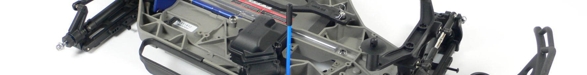
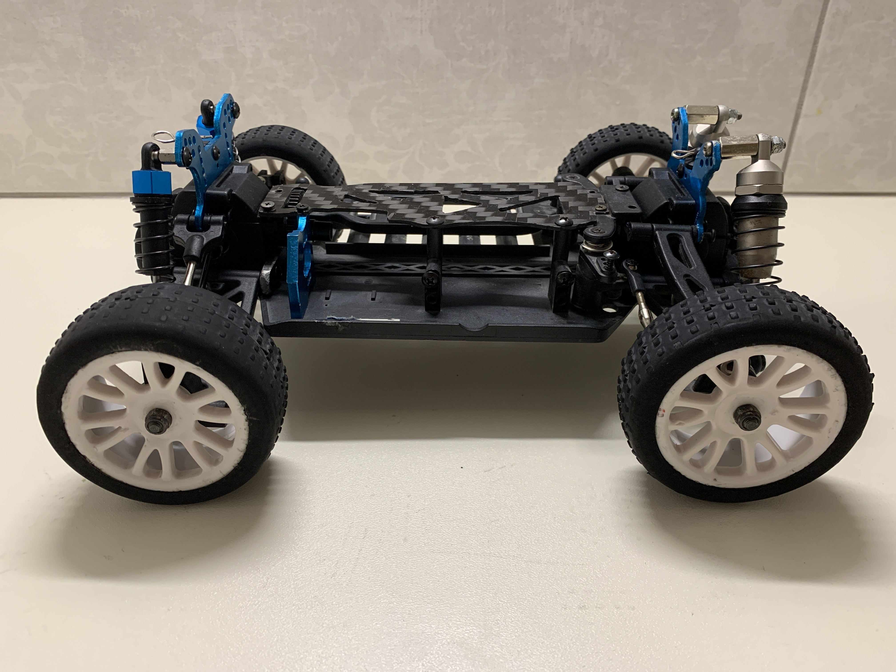

Chasis
Here you can find out more about the evolution of the projects chassis
Chassi V1.0


This is the chassi of my first ever controlled car and this is how i got the idea for the CropsSpy project, at the start i was trying just to fix it so it can be functional again, then i got the idea to make it autonomus, and after that i wanted it to do something helpful,this is when i got the idea to automate and in the process of that make the task of "Hostile" plants removal ecological.Soon i realised that this wont do it anymore so i moved on to the next Prototype version of the robot the Chassi V2.0.
- Status: Spare parts
- In service: Aug 2020 - Nov 2020
- Model: HSP 1/16 buggy RC car